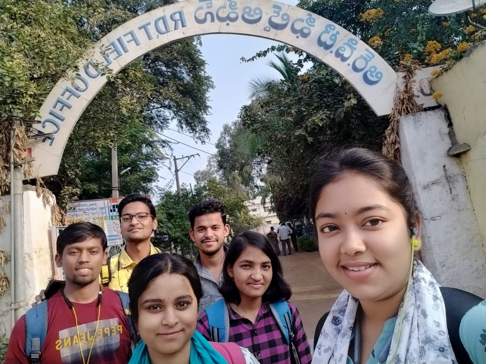

Rural Development Trust (RDT), previously the Spanish Fundación Vicente Ferrer (FVF), has left an enduring legacy that spans over fifty years. Since its founding in 1969, its steadfast dedication has improved the lives of marginalised groups such as Persons with Disabilities (PWDs), Scheduled Castes (SC), Scheduled Tribes (ST), and Backward Castes (BC). Working in the harsh terrain of Andhra Pradesh's Ananthapuram district, which is marked by patchy rains and parched areas, RDT has to contend with strongly ingrained caste, tribal, and gender-based differences as well as areas of extreme poverty.
When Father Vicente Ferrer came in this harsh region in 1969, it was ruled by strong landowners who imposed feudal control on tenant farmers from lower castes and continued bonded labour via unpayable debt. In light of this, RDT set out on a life-changing mission to mould the futures of those caught in the web of societal injustice and poverty.

Atmakuru Group Members at RDT Field Office, Kalyandurg.
During our internship, we were able to fully immerse ourselves in the various projects that RDT has started. These projects are all aimed at improving the rural poor's quality of life, with a special focus on marginalised communities like SC, ST, BC, and Persons with Disabilities (PWDs). This extensive research seeks to present a thorough account of RDT's historical trajectory, charting the organization's modest beginnings in 1969 and its subsequent growth into a dynamic, all-encompassing entity committed to tackling all facets of rural development. The enormous issues encountered by the rural poor, particularly in important areas like nutrition, health, and social inequities, constitute the basis of the contextual framework for comprehending RDT's solutions. RDT's strategic projects are a ray of hope for marginalised communities, carefully crafted to address and mitigate these issues. We actively participated in a variety of RDT programmes throughout the internship, obtaining priceless practical experience in a range of industries. Education, Women's Empowerment, Hospitals, Community Health, Habitat, Ecology, Sports, Culture are just a few of the programmes that fall under this category.